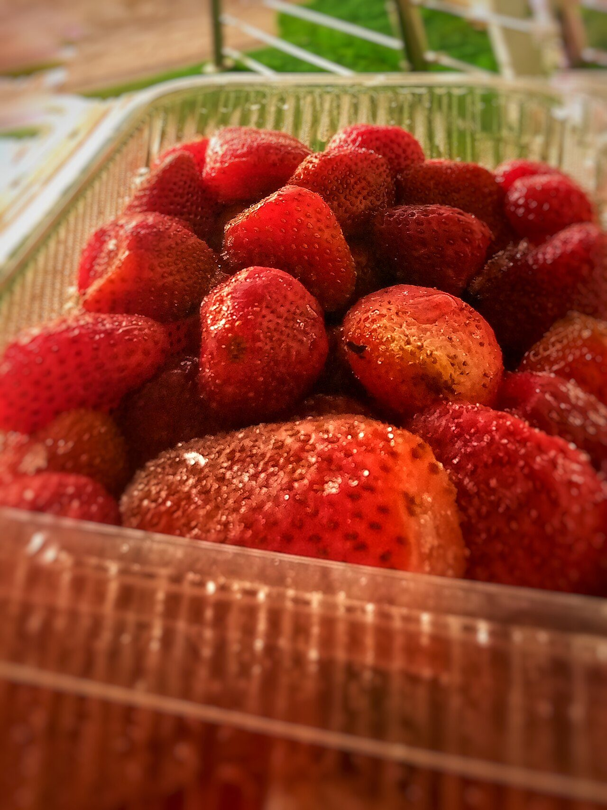
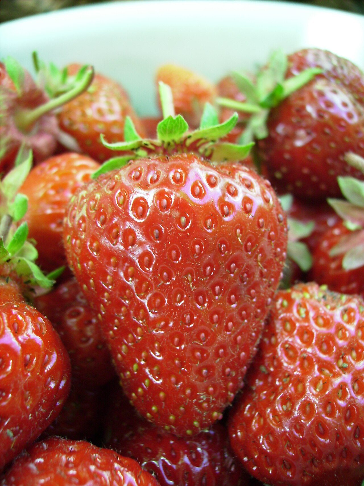

To keep strawberries fresh, refrigerate them, keep them dry, and don't wash them until you are ready to eat. Store them in a single layer in a breathable container and remove any soft or moldy berries right away.
Strawberries are as delicate as they are delicious. Because they are soft and highly perishable, a little care makes a big difference in how long they stay firm, glossy and sweet. Here is how to store strawberries the right way.
Keep them cold
Strawberries spoil quickly at room temperature, so the fridge is their friend. Refrigerate them soon after you bring them home and keep them chilled until you are ready to eat. Cold slows both softening and mold, buying you precious extra days.

Don't wash until you're ready to eat
This is the single most important tip. Water on the surface of strawberries encourages them to soften and mold faster, so keep them dry in storage and rinse only the portion you are about to eat. When you do wash them, do it gently and pat or let them dry before serving.
Leave the hulls on
Keep the green stems and leafy hulls attached until eating. Removing them creates an open, moist surface that spoils more quickly. Hull the berries only when you are ready to enjoy or prepare them.
Store in a single layer
Strawberries bruise under their own weight when piled up. For the best results:
- Arrange the berries in a single layer, not crowded or stacked deep.
- Use a breathable container and, if you like, line it with a paper towel to absorb excess moisture.
- Keep the container loosely covered so air can circulate rather than sealing in dampness.

Remove spoiled berries promptly
One soft or moldy berry can quickly affect its neighbours. Look through the box when you get home and again each day, and take out any that are bruised, leaking or showing mold. This simple habit protects the rest of the batch.
Serve at the right temperature
For the fullest flavour and aroma, let strawberries sit out of the fridge for a short while before eating. Berries served ice-cold can taste muted, while a few minutes at room temperature lets their sweetness and fragrance come forward — a small ritual worthy of premium Japanese strawberries.
Freezing for longer storage
If you cannot eat them in time, freeze them. Wash and hull the berries, spread them in a single layer on a tray to freeze, then transfer to a bag or container. The texture softens once thawed, so frozen strawberries are ideal for smoothies, sauces, jam and baking rather than eating fresh.
Timing your purchase to the peak season also helps — read when Japanese strawberries are in season, and explore the different strawberry varieties worth trying.
Frequently asked questions
Should you wash strawberries before storing them?
No. Wash strawberries only right before you eat them. Added moisture speeds up softening and mold, so keep them dry in the fridge and rinse just before serving.
Do strawberries last longer in the fridge?
Yes. Strawberries are perishable and spoil quickly at room temperature, so refrigeration keeps them fresh longer. Store them cold and unwashed, ideally in a single layer in a breathable container.
How long do fresh strawberries last?
Fresh strawberries are best eaten within a few days of buying them. Keeping them cold, dry and uncrowded, and removing any spoiled berries promptly, helps them last as long as possible.
Can you freeze strawberries?
Yes. For longer storage, wash and hull the berries, freeze them in a single layer on a tray, then transfer to a bag. The texture softens once thawed, so frozen strawberries are best for smoothies, sauces and baking rather than eating fresh.
Fresh from Japan, delivered to you
Reserve premium Japanese strawberries and enjoy them at their peak.
Shop & Reserve →